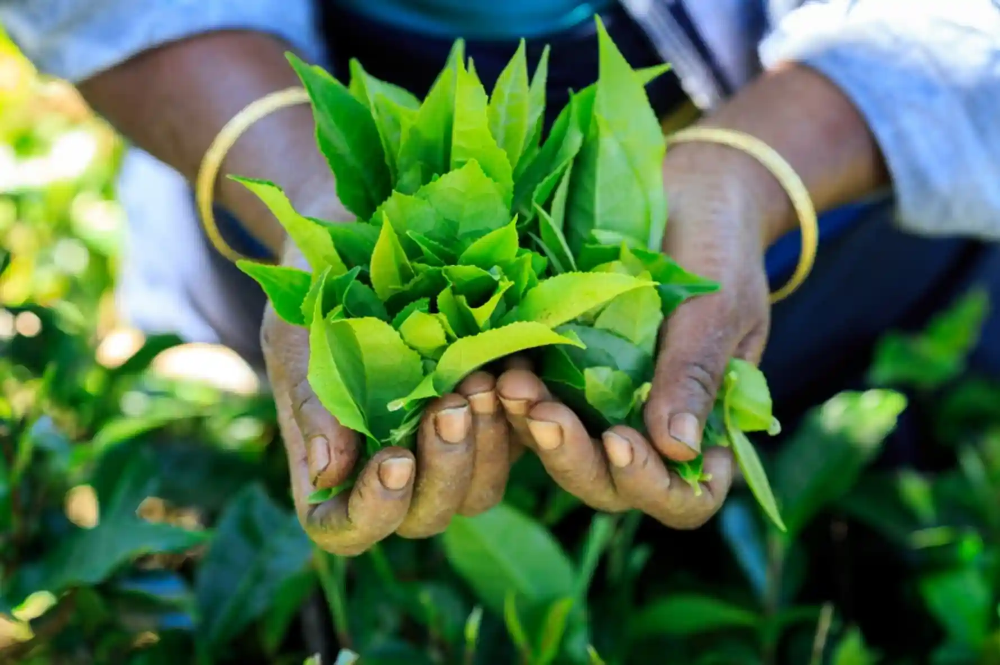
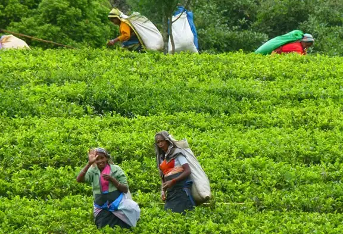
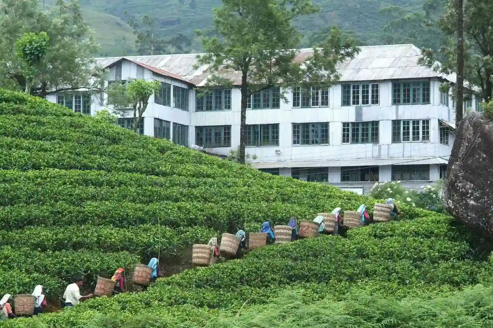

Tea Production and its' economy
The tea industry exported a total of 228 MnKgs of tea in 2021, fetching for the national
economy a revenue of about US $ 1,320 million. In terms of production, Sri Lanka managed to record a figure of 300 MnKgs last year, which was achieved despite the
fertiliser issue hampering the plantation activities.
The export and production figures are a significant improvement from what was achieved in 2020, where the export
revenue from Ceylon Tea was of US $ 1,213 million and the production was 279 MnKgs.

Employment
During this period, the ownership of tea lands has changed from privately-owned large-scale tea plantations to nationalized tea plantations managed by the state, and to the present-day regional plantation companies owned by private companies.
The tea industry in Sri Lanka has undergone several changes over the last 150 years and has played an important role in terms of its contribution to employment as many people who are less fortunate in terms of economy, have a form of income and employment because of this vast industry. This industry employs around one million people directly or indirectly.

Manufacturing
Sri Lanka’s tea cultivators and manufacturers are the custodians of the traditional, orthodox method of black tea production. This is still agreed by most experts to produce the best black tea. Even with the technological improvements introduced over the last thirty or forty years, the orthodox method is relatively slow and labor-intensive; but as the tea planters and traders of Sri Lanka have always maintained, good tea cannot be hurried. Nor, oddly enough, can it be delayed.
The time devoted to each of the processes of tea manufacture has to be finely judged if a quality product is to be obtained. This is a matter of the tea-maker’s judgment, for the right timing depends on the moisture content of the plucked leaf, the temperature and humidity conditions prevailing over the period of manufacture, and a variety of other factors. Although the process of making fine black tea is simple in its essentials, expertise, experience, and a ‘feel’ for the task are absolutely essential to success.